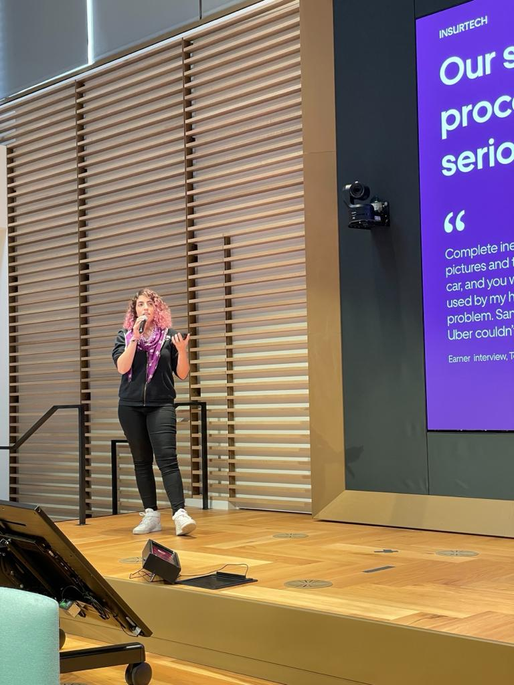

Story
For the past 8 years
I've detangled complex experiences into smooth flows in a wide variety of markets. From helping a heliport better address their landing process to changing the way gigantic corporation Telefónica handles late payments, my ability to learn about highly complex lines of work is what sets me apart.
What I especially enjoy are the stringent problems — those highly ambiguous scenarios that require extra scrutiny from the design end and demand partnership with data, research, and engineers. I particularly love co-design, system mapping, and engaging UI opportunities.